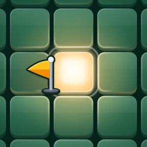
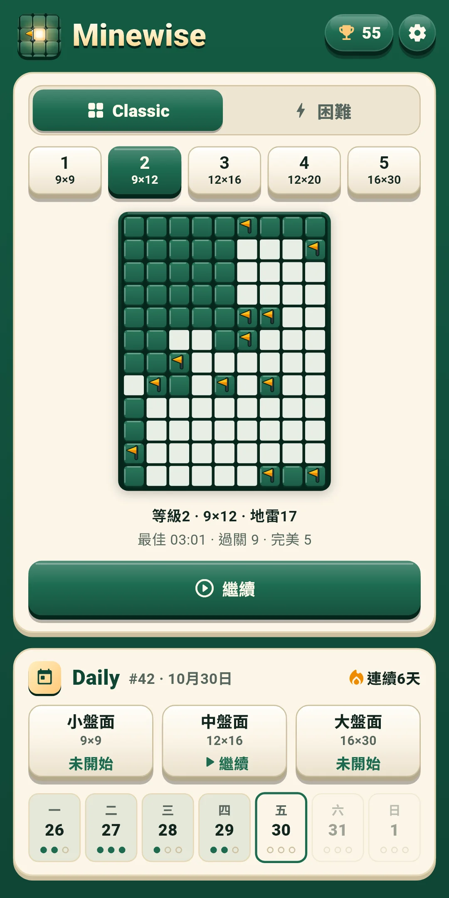
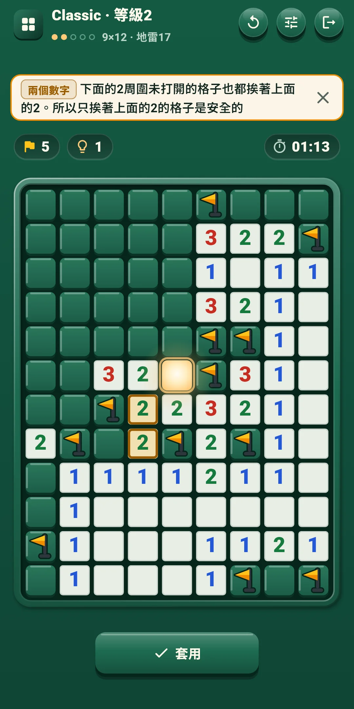
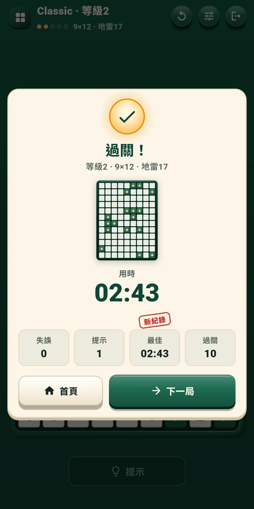
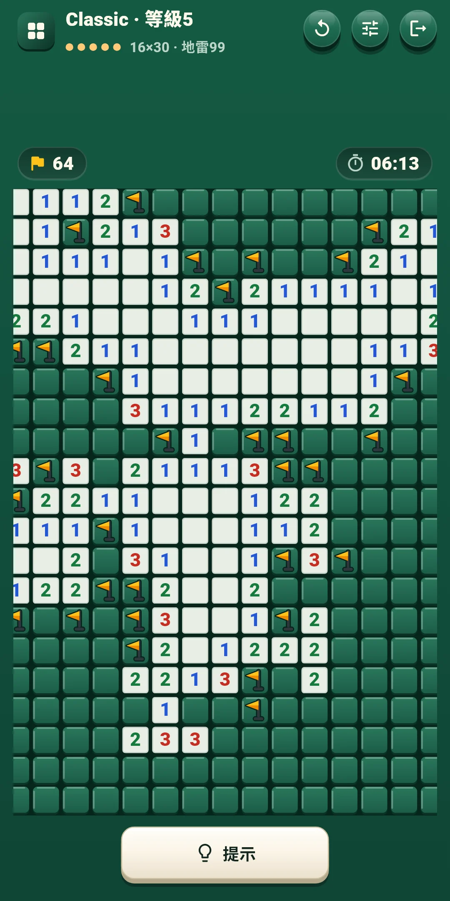
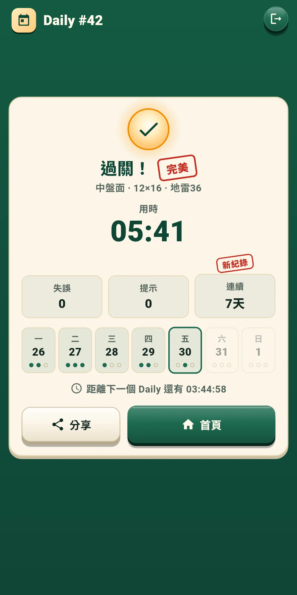
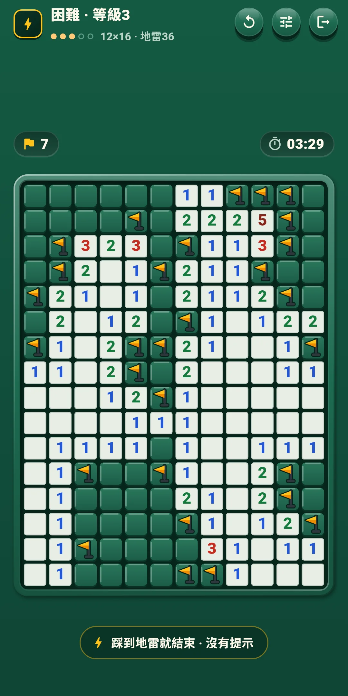
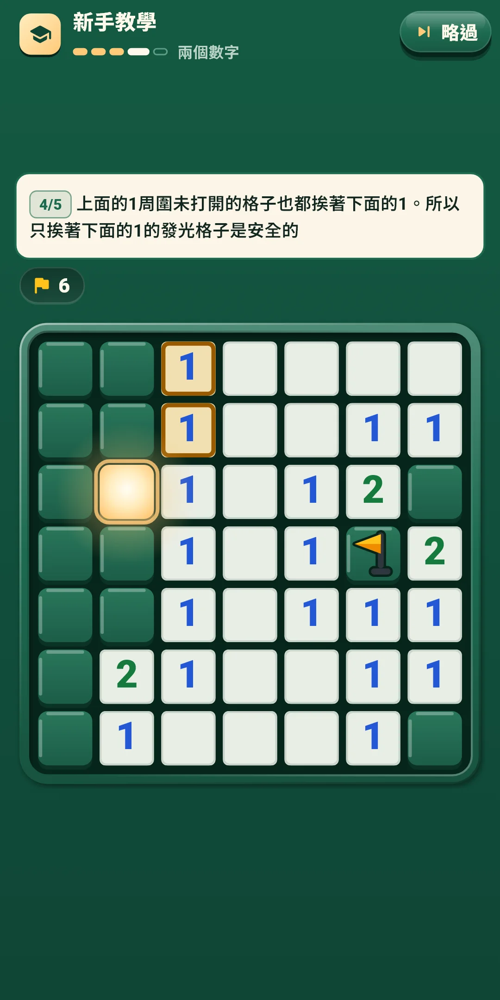

玩法說明







| 應用程式名稱 | Minewise |
|---|---|
| 版本 | 1.0.1 |
| 開發 | Willee Project |
| 支援平台 | Android |
Minewise 是一款無需猜測的踩地雷益智遊戲：只靠數字線索避開地雷，打開所有不是地雷的格子。每個盤面都從發光的起始格開始，不用猜，只靠邏輯就能一路解到最後。
教學用一個7×7的盤面，分五步教你基礎：起始格 → 數字與插旗 → 一次打開 → 兩個數字 → 獨立完成。每一步都會讓要看的數字和地雷亮起，只有該點擊的格子才有反應。提示會用名稱告訴你用了哪種要點：一個數字、兩個數字、多個數字、剩餘地雷數、所有佈雷方式。它們的意思如下。
等級1的盤面只靠一個數字和兩個數字就能解開。從等級2起，有些盤面還需要多個數字和剩餘地雷數。更難的要點，會由提示連同理由一起告訴你（見第4章）。
頂部一行左側顯示模式名稱和等級（例如 Classic · 等級3），下面是等級圓點和盤面大小·地雷數（例如 12×16 · 地雷36）。Daily 顯示 Daily 編號（#12）和盤面種類。右側的按鈕如下。
| 按鈕 | 作用 |
|---|---|
| 重來（↻） | 打開選擇這一局從頭開始或新的一局的面板（見下） |
| 快速設定 | 打開一個面板，不離開遊戲畫面就能改音效、震動、特效、操作和盤面設定（見第5章）。點擊面板上方或往下拉就能關閉 |
| 退出（門的形狀） | 回到首頁。正在解的盤面會自動儲存 |
盤面正上方的一行：
盤面下方的一行：
| 按鈕 | 作用 |
|---|---|
| 提示 | 告訴你下一個要打開的格子和理由。不限次數（見第4章）。打開起始格之前和盤面結束之後不能點擊 |
| [打開|插旗] | 只在操作 B 時顯示。決定點擊格子是打開還是插旗 |
重來面板：
| 選項 | 內容 |
|---|---|
| 這一局從頭開始 | 把盤面恢復到打開起始格之前的樣子。Classic 的用時、失誤和提示也從頭算，Daily 則繼續累計當天的用時、失誤和提示。打開起始格之前會變淡、不能點擊。困難模式沒有這一項 |
| 新的一局（Classic 和困難） | 放棄這一局，換一局同等級的。放棄的盤面不算過關（困難模式見第6章）。Daily 沒有這一項 |
提示按鈕會告訴你下一個要打開的格子，並說明理由。提示不限次數，免費使用（困難模式除外）。打開起始格之後才能使用。
同一個按鈕要按三次：提示 → 查看格子 → 套用。
在設定的操作和盤面中開關。遊戲中可以用快速設定馬上更改。
| 等級 | 盤面大小 | 地雷數 |
|---|---|---|
| 1 | 9×9 | 10 |
| 2 | 9×12 | 17 |
| 3 | 12×16 | 36 |
| 4 | 12×20 | 50 |
| 5 | 16×30 | 99 |
Minewise Daily 小盤面 #12 ✅ 03:41 失誤 0 · 提示 1 🔥 連續5天
#12是 Daily 的編號，旁邊是用時（分:秒，超過一小時則為時:分:秒）。第一行的「Minewise Daily」在任何語言中都一樣，並寫上盤面種類，方便解同一個盤面的人互相比較。第二行是失誤和提示的次數，第三行是連續紀錄（兩天以上才顯示）。第一個 Daily 是 #1，之後每天加一，編號相同就是同樣的盤面。
點擊首頁右上角的獎盃按鈕打開。按鈕上會顯示過關的盤面數。
點擊首頁右上角的齒輪打開。分為四組。遊戲中可以用快速設定按鈕馬上更改前三組。
| 項目 | 內容 |
|---|---|
| 音效 | 開關打開格子、插旗和拔旗、點擊數字打開周圍、踩到地雷、提示、盤面過關和結果印章等的聲音 |
| 震動 | 插旗時短促，拔旗時更輕，踩到地雷時沉重，盤面過關時較長。可以開關 |
| 減少特效 | 一次減少所有特效。開啟期間，下面的動畫、光效、彩紙都相當於關閉 |
| 動畫 · 光效 · 彩紙 | 逐項開關特效。動畫是打開的波紋、插旗彈跳和拆除，光效是起始格的光、爆炸和過關的光，彩紙是結果畫面。沒有整個盤面晃動的特效 |
| 項目 | 內容 |
|---|---|
| 操作方式 | 在點擊 · 長按（預設）和[打開|插旗]按鈕中選擇（見第3章） |
| 長按時間(毫秒) | 從 250、300、350、400、500 中選擇。預設 350。只在點擊 · 長按時使用 |
| 點擊數字打開周圍 | 周圍的旗子數與數字相同時，打開其餘的格子。預設開啟 |
| 項目 | 內容 |
|---|---|
| 顯示時間 | 在盤面上方顯示時間。預設開啟 |
| 立即顯示失誤 | 立即在插錯的旗子上標出 X（困難模式除外）。預設關閉 |
| 大號數字 | 把盤面上的數字畫大一些。預設關閉 |
| 項目 | 內容 |
|---|---|
| 語言 | 跟隨系統（預設），或從清單中直接選擇 |
| 隱私權選項 | 再次打開廣告同意視窗。只在需要同意的地區（例如歐洲）顯示 |
| 玩法說明 | 簡短的規則畫面：目標、數字、發光的起始格、操作、失誤、提示、Daily 和困難 |
| 重新查看教學 | 再玩一次新手教學 |
| 關於 | 版本、本說明（玩法說明）、隱私權政策、開放原始碼授權 |